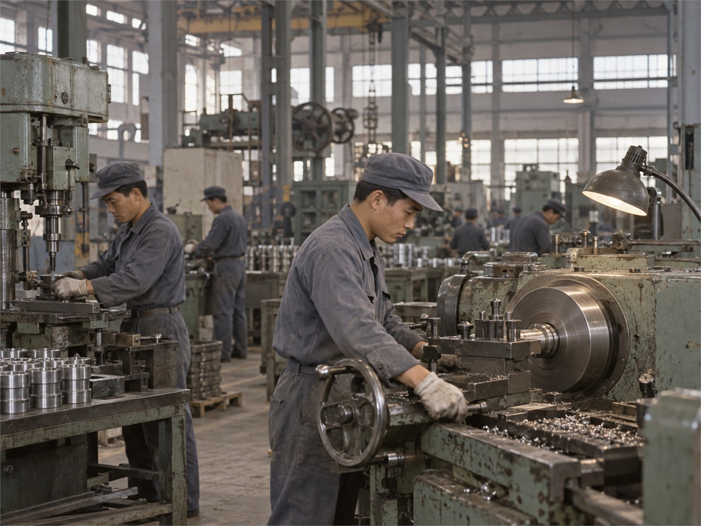
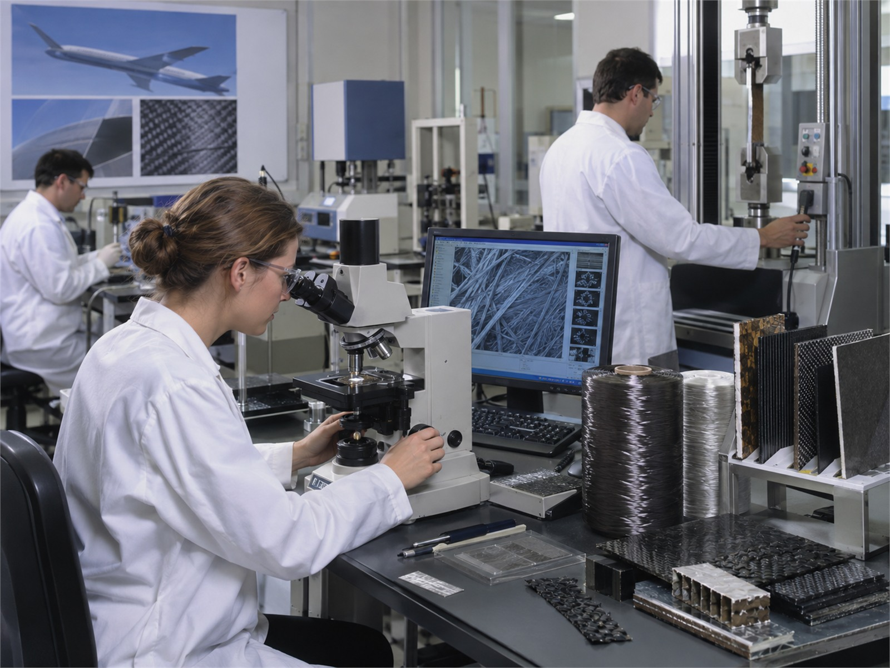
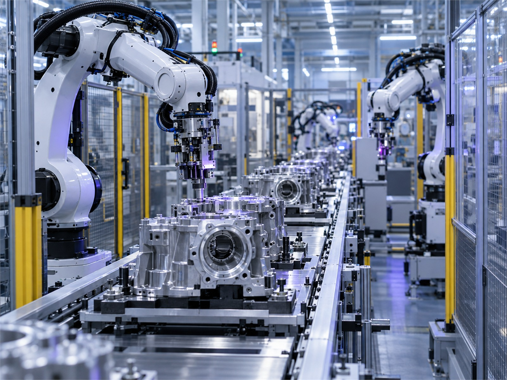
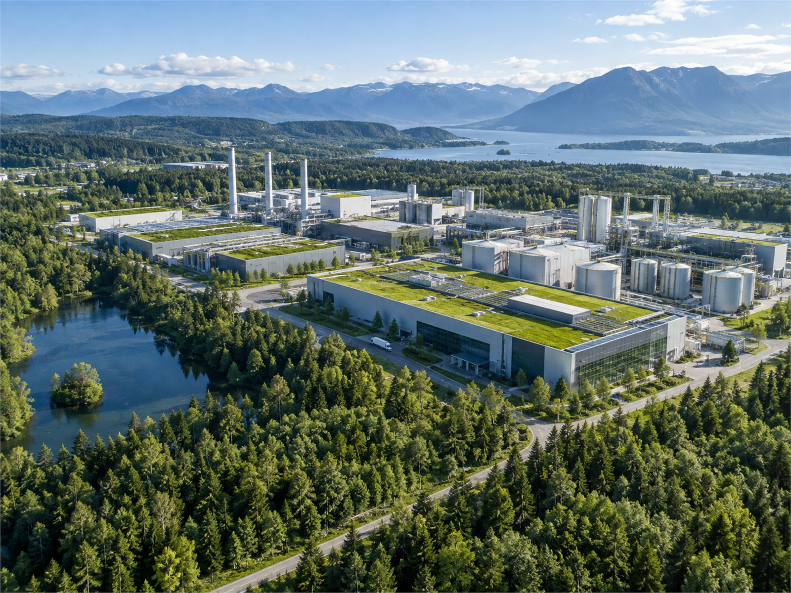

넥소라섬유 창립
1966년, 직원 40명으로 산업용 섬유를 짜는 공장을 세우고 첫해에 원단 30만 미터를 국내에 납품했습니다.

공장을 세우고, 해외로 나가고, 사업을 넓혀 온 60년을 연도별로 적었습니다.
1966년, 직원 40명으로 산업용 섬유를 짜는 공장을 세우고 첫해에 원단 30만 미터를 국내에 납품했습니다.

1969년, 산업용 원단을 처음으로 일본에 수출했고, 이듬해에는 대만까지 넓혀 물량을 두 배로 늘렸습니다.

1972년, 타이어 보강재로 쓰는 나일론 코드를 만들기 시작해 국내 타이어 회사 세 곳에 납품했습니다.

1975년, 공장 안에 연구원 12명이 일하는 기술연구소를 열고 원사 강도 시험을 직접 하기 시작했습니다.

1976년, 원사부터 원단까지 한 곳에서 만드는 통합 공장을 경북에 짓기 시작해 3년 만에 완공했습니다.
1979년, 폴리에스터 원사를 직접 뽑아 원단 공장에 대기 시작하면서 해외 원사 수입을 크게 줄였습니다.
1982년, 컨베이어 벨트용 원단을 만들어 광산과 항만에 납품하고 이듬해 벨트 사업부를 따로 꾸렸습니다.
1985년, 변압기 회사를 인수해 전력기기 사업을 시작하고 발전소와 제철소에 변압기를 대기 시작했습니다.

1986년, 미국과 독일에 대리점을 두고 산업용 원단 수출을 늘려 수출 비중이 처음으로 절반을 넘었습니다.
1989년, 유가증권시장에 주식을 상장하고 그때 모은 자금으로 원사 설비와 연구 장비를 새로 들였습니다.
1992년, 중국 장쑤성에 원단 공장을 세워 현지 자동차 부품 회사 다섯 곳에 원단을 대기 시작했습니다.
1995년, 국내 공장 전체가 ISO 9001 품질 인증을 받고 불량 기록을 전산으로 관리하기 시작했습니다.
1996년, 방탄복과 케이블 보강재에 쓰는 아라미드 섬유 연구를 시작하고 연구원을 두 배로 늘렸습니다.
1999년, 섬유 밖으로 사업이 넓어지면서 회사 이름을 넥소라로 바꾸고 로고와 색도 새로 정했습니다.
2002년, 베트남 호찌민 인근에 산업용 원단 공장을 가동해 동남아 고객사 물량을 현지에서 댔습니다.
2005년, 탄소섬유 시험 라인을 만들고 첫 시제품을 내 자동차 부품 회사 두 곳과 강도 시험을 시작했습니다.
2006년, 국내외 공장의 주문·재고·생산 기록을 한 시스템으로 묶어 본사에서 한 번에 보게 했습니다.
2009년, 주요 설비에 센서를 달아 가동 기록을 자동으로 모으고, 그 기록으로 고장 원인을 찾았습니다.
2012년, 공장 운영에 쓰던 시스템을 다른 회사에도 팔기 시작하면서 디지털솔루션 사업부를 세웠습니다.
2015년, 울산 공장에 설비 상태를 실시간으로 보는 관제실을 만들고 밤에는 무인으로 설비를 돌렸습니다.
2016년, 폐페트병에서 뽑은 재생 원사를 시험 생산하고 아웃도어 의류 회사 세 곳에 샘플을 보냈습니다.
2019년, 국내 공장 지붕 네 곳에 태양광 발전 설비를 달아 쓰는 전력 일부를 직접 만들기 시작했습니다.
2022년, 폐섬유를 재생 원료로 만드는 전용 공장을 열고 폐섬유 수거 업체 20곳과 공급 계약을 맺었습니다.
2025년, 배출량을 줄인 새 소재 생산라인을 시험 가동하고 자동차 고객사 두 곳과 품질 검증을 시작했습니다.